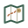
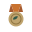
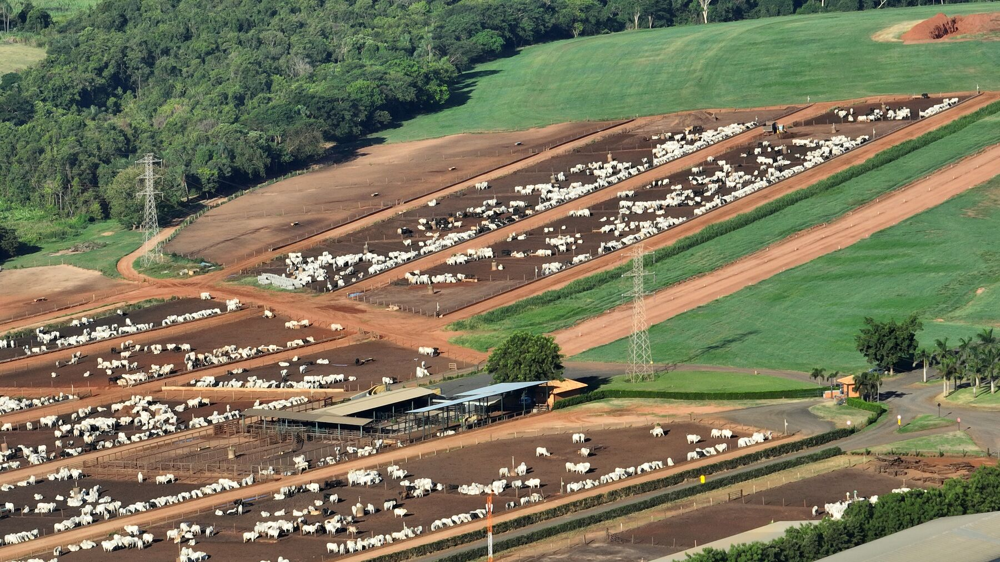
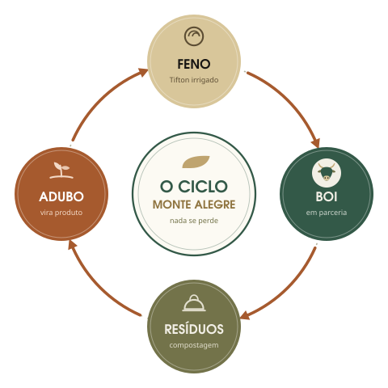
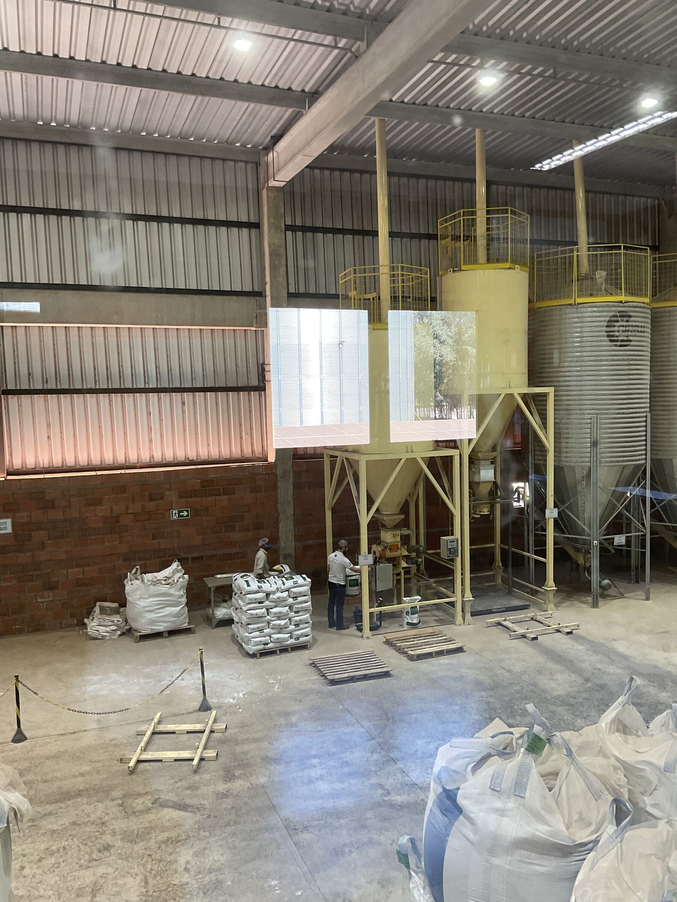
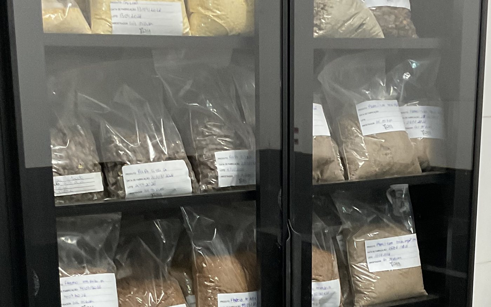
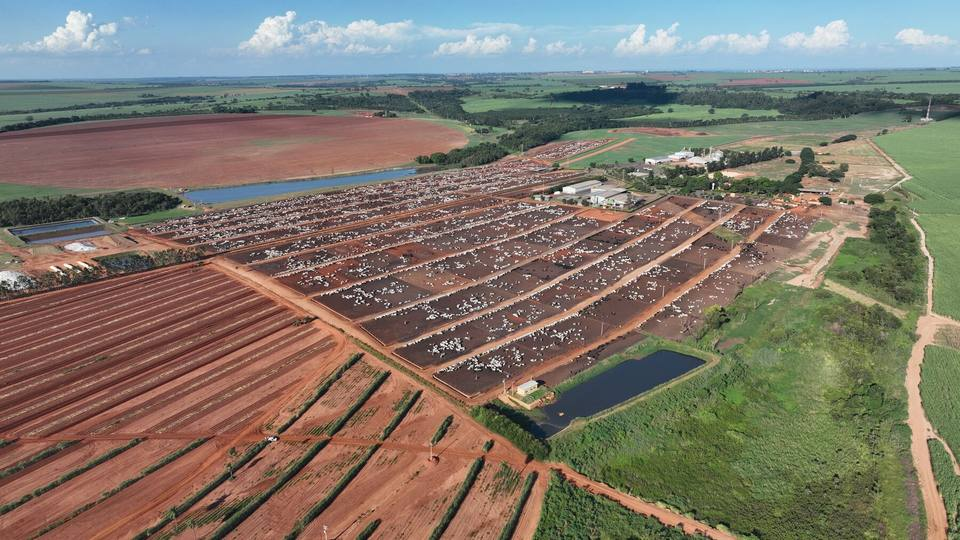
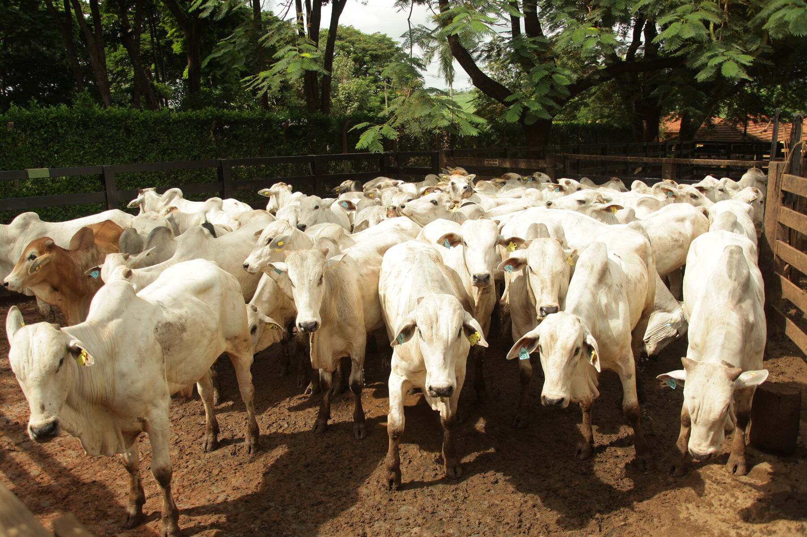
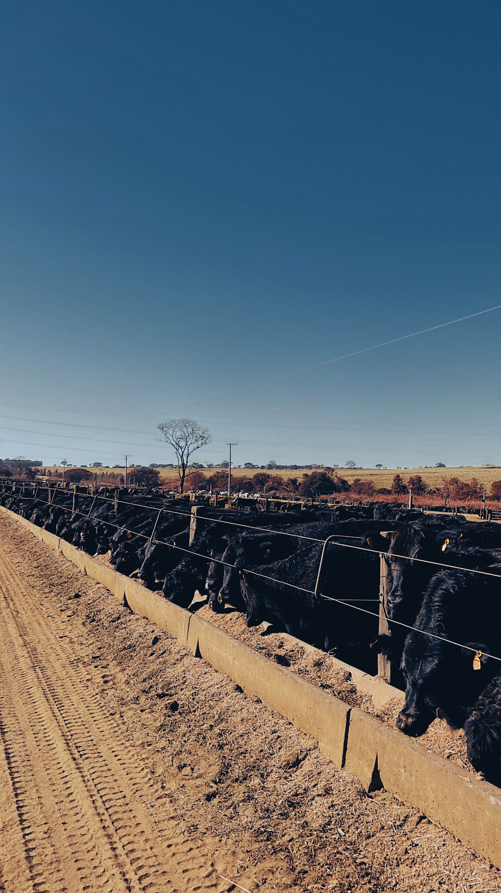

Uma história que inspira.
Da citricultura de Oswaldo Perrone, em 1935, ao Top 20 de confinadores do Brasil: o CMA é um grupo agroindustrial completo, pioneiro em certificação, que entrega resultados reais para quem confia o gado.

O CMA: tudo se aproveita.
Muito antes de virar tendência no agro, o CMA já operava sob a lógica da economia circular. Cada sobra vira insumo ou produto, e o cuidado com a terra vira receita auditada: sustentabilidade com nota fiscal.
Feno
Tifton 85 recebe o boi na chegada, como também vira produto de mercado.
Boi
Engorda com dieta proprietária, customizada às necessidades de cada raça.
Resíduo orgânico
Recolhido a cada safra de boi e compostado até a maturação completa.
Adubo
Fertiliza o feno e a lavoura; o excedente é vendido ensacado, sem cheiro.

As engrenagens do Grupo CMA.
O confinamento é o eixo que conecta nossas operações. Conheça os negócios que, de forma integrada, alimentam toda a cadeia.
O coração do grupo
Engorda em parceria, do brinco ao processamento. Giro de 90 a 110 dias, espaço generoso por cabeça e bem-estar certificado QIMA/WQS.
O Caminho do BoiFeno com excelente desempenho para os seus animais
Tifton 85 irrigado em três formatos. O mesmo feno que recebe o boi do CMA é o que você compra.
Feno Tifton 85
Nutrição que nasce em casa
Dietas de alta performance, desenvolvidas pelo CMA para aumentar a eficiência do confinamento e os resultados dos parceiros.
Nutrição própria
Análise e rastreabilidade de lotes
O CMA Lab analisa todos os ingredientes que entram e todos os produtos que saem, e mantém amostras guardadas por validade, o que assegura a rastreabilidade completa de cada lote produzido.
O laboratório
Do resíduo à receita
Compostagem a cada safra de boi: o resíduo orgânico vira adubo, para uso próprio e venda ensacada.
Adubo orgânico
A parceria que começa antes do confinamento
Apoio à recria nas fazendas parceiras, com suplemento da Nutri e auxílio na gestão, garantindo o fluxo de animais mais bem preparados para o cocho.
Origem
Quando sabemos exatamente o que e quanto o animal consome, temos mais previsibilidade e segurança sobre o resultado que ele vai entregar.
A tese de previsibilidade que guia o CMA
Tradição
Noventa anos de terra, três gerações, uma palavra que vale. Quem confia o gado ao CMA confia numa história, não numa aposta.
Ciclo
Economia circular com nota fiscal: nada se perde no CMA. Palha entra na dieta, resíduo vira produto.
Previsibilidade
Brinco eletrônico, dieta conciliada no sistema, pesagens regulares e balança aberta ao parceiro.
Reconhecimento de quem entende.
1º confinamento certificado do Brasil
Selo RAS/Rainforest desde abril de 2016, com auditoria Imaflora.
2016Top 20 Confinadores do Brasil
Entre os maiores confinamentos do país no ranking DBO.
2025Certificação Bem-Estar Único
Manejo e bem-estar animal auditados por certificadora independente.
2024Boas práticas reconhecidas
Prêmio Fazenda Sustentável, iniciativa de Rabobank, Imaflora e Cargill.
2026Seu gado no confinamento pioneiro em certificação do Brasil.
Modelos de parceria que se adaptam à sua estratégia, possibilidade de travar o preço na B3 e o relatório do seu lote em uma página. Simule sua parceria.